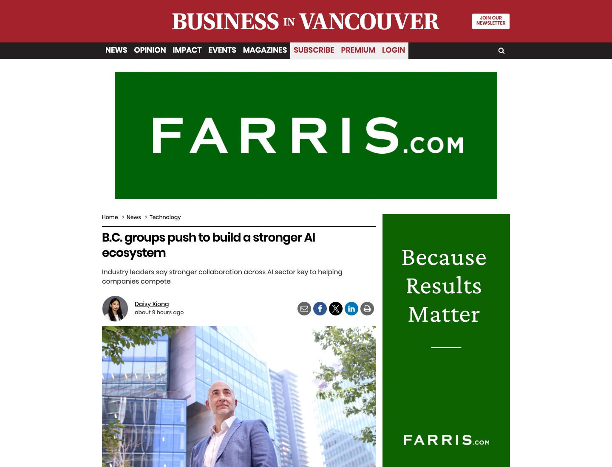

press-2026-07-31-biv-ecosystem-context-v2.jpg
- Tier
- 2
- Slot
- feature-lead
- Ratio
- 16:10 (1200×750)
- Outlet
- Business in Vancouver
- Credit
- Coverage screenshot: BIV. Article photo: Rob Kruyt / BIV.
- Method
- article_clip
- Legacy
- press-2026-07-31-biv-ecosystem-context.jpg
- Manifest status
- pending_recapture
- Run
- error
- Source
- https://www.biv.com/news/technology/bc-groups-push-to-build-a-stronger-ai-ecosystem-12601298
clip capture failed (playwright: Command '['node', '/var/folders/8b/bx6m0hqs01l35j9xp7kk73dr0000gn/T/press-capture-js-4yo5j6tn/clip-capture.js', '/var/folders/8b/bx6m0hqs01l35j9xp7kk73dr0000gn/T/press-capture-js-4yo5j6tn/clip-config.json']' timed out after 120 seconds; cdp: websocket-client required